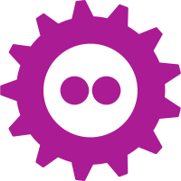
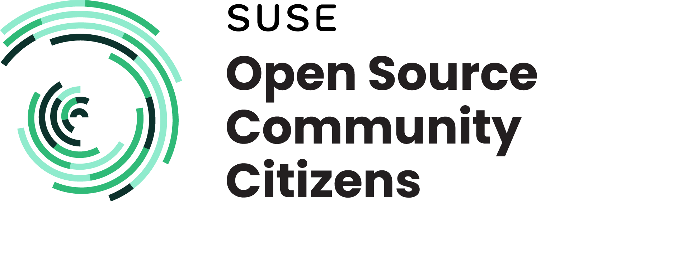
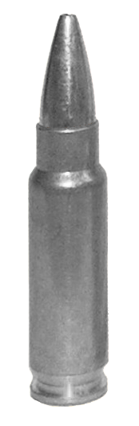
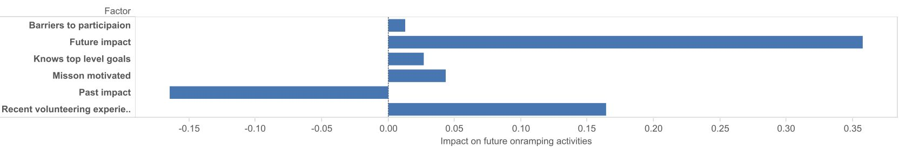
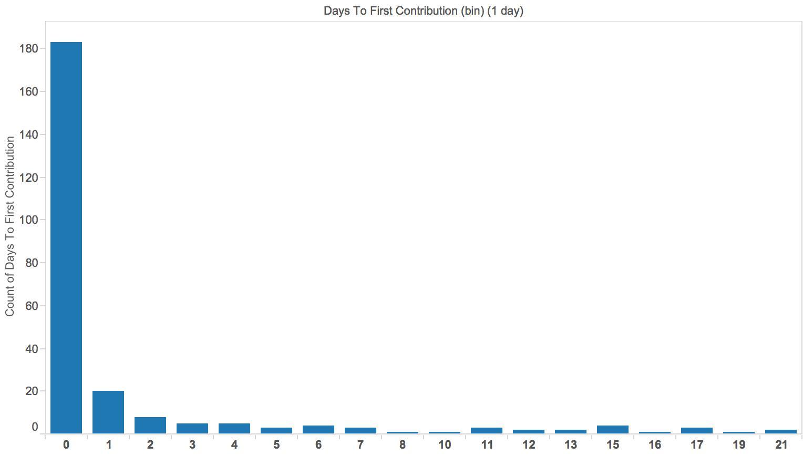

Tearing down Barriers for Contributions
Empower Non-coders and Newcomers
Dan Čermák
 FOSDEM 2022
CC BY-SA 4.0
Story

It all started with a workshop…
Target audience
- package & project maintainers
- you want more contributions & contributors
- ask yourself: Who's your target audience?

Make it trivial to contribute
Can my grandma correct a typo?
- Can I figure out how to contribute?
- What do I need to contribute?
- How can I join the community?
- How can I get my contribution accepted?
Tooling
Help not a hindrance
Translations
Documentation / Tutorials
- make it obvious how to edit
- accept any type of format (even or )
Communication
One place to reach the project
- Real time chat
- Forum/mailing list
- Issue/feature tracker
Community
- be an enabler and empower your community, don't be a gatekeeper
The Contributor Funnel
Recruiting contributors

- contributors need a vision
- good onboarding experience encourages further onboarding

- prompt responses boost the chances of a contributor returning
- suggest another issue to work on
Retaining contributors
Keep them motivated!
- intrinsic motivation
- altruism
- future rewards
- personal need
Build a welcoming community
- enforce a code of conduct
- provide a place for your community to meet & talk
- document & enforce processes meticulously
- be present and friendly
- empower your contributors
Checklist
[ ] Landing page (→ whatcanidoformozilla.org)[ ] Appropriate communication channels with newbie corner[ ] New contributor/quick start guide[ ] Automated CI[ ] Tasks & follow up tasks for newcomers[ ] Can my grandma correct that typo?
{kind=link}